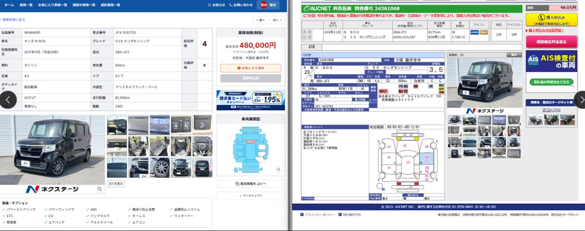

単元20
ネクステージ業販とオークション
この単元のゴール案
業販・オークションで車を押さえられる
含む内容：業販の使い方、AAでの落札
5-4ネクステージ業販の使い方詳しいマニュアル
- 5-4-1

図5-Aネクステージ業販の車両ページ。右上の「商談申込み」を押す - 5-4-2

図5-B商談申込みの確認画面。確認したいことはコメントに書き、「商談申込み」を押す - 5-4-3

図5-Cネクステージ業販用LINEでの共有の例（①担当店舗 ②担当者 ③陸送先 ④車検） - 5-4-4
落札の可否はグループLINEで回答が来る。回答が出るまで待つ詳しく
- 5-4-5

図5-D同じ車両のネクステージストック（左）とオークネット（右）。評価点・グレードの違いを見比べる
5-5オークション（AA）での落札詳しいマニュアル
教育担当者のチェック
押すと印が付きます。この端末のブラウザにだけ保存されます。正式な記録は印刷したチェックリストに書いてください。